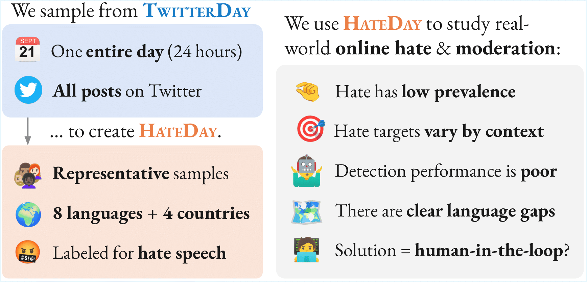
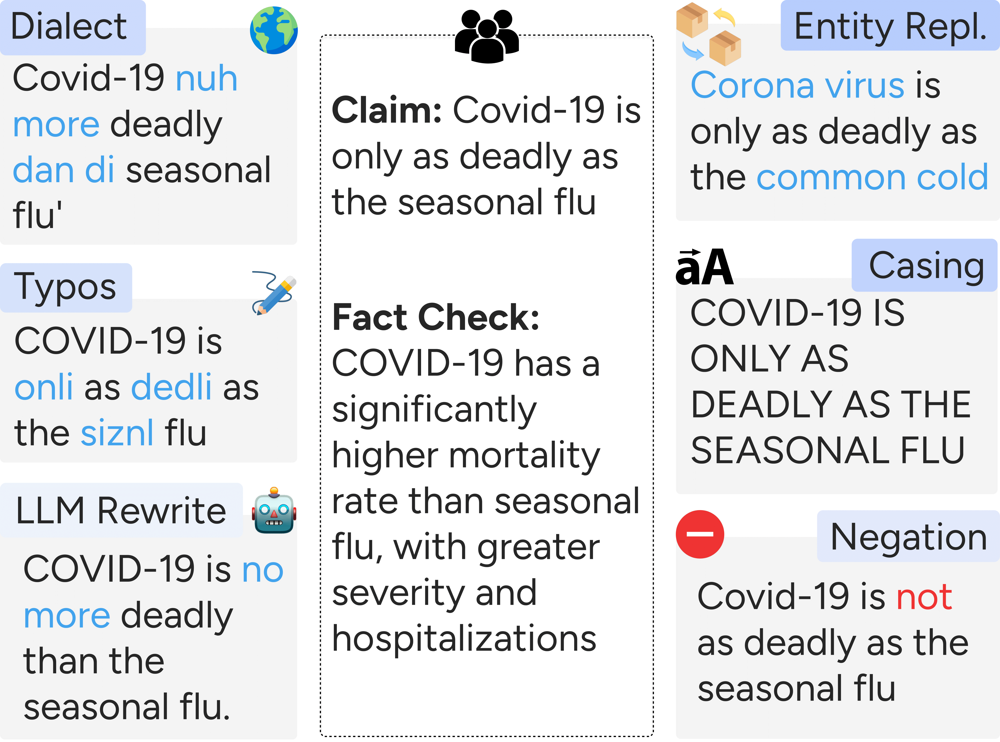
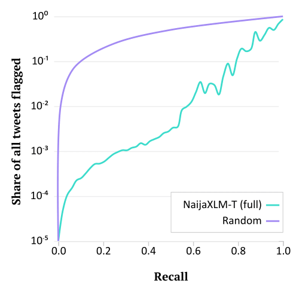
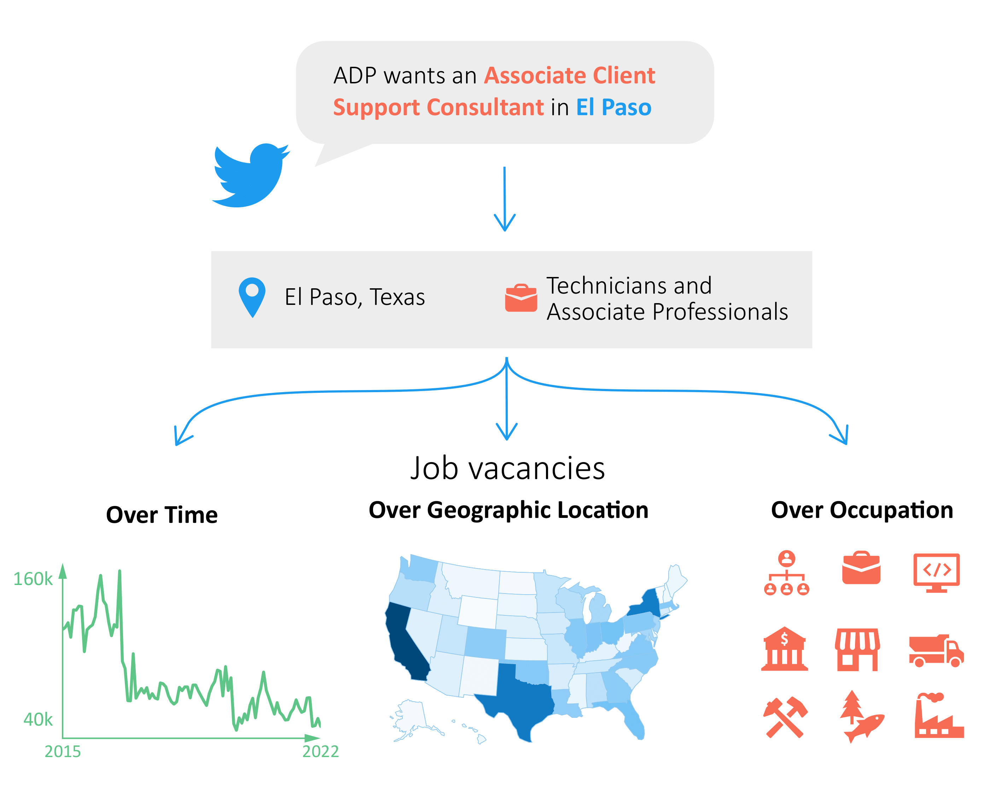
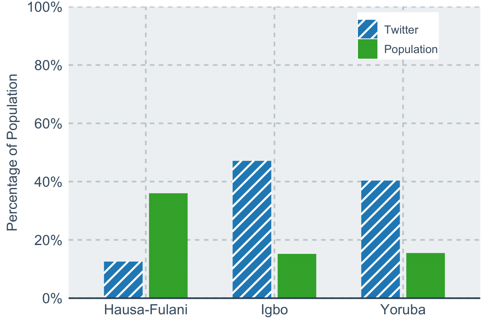
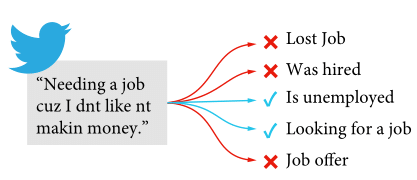

Manuel Tonneau
Ph.D. candidate in Social Data Science, University of Oxford
Consultant, Development Impact (DIME), The World Bank
Associated Researcher, Weizenbaum Institute
Member of the Open Networks and Big Data Lab, New York University
Email: X@Y where X=manuel.tonneau and Y=oii.ox.ac.uk
Social:
Resources:
Papers:

Publications
Most recent list on Google Scholar or Semantic Scholar.
‡ indicates equal contribution.

HateDay: Insights from a Global Hate Speech Dataset Representative of a Day on Twitter
Manuel Tonneau, Diyi Liu, Niyati Malhotra, Scott A. Hale, Samuel P. Fraiberger, Victor Orozco-Olvera, Paul Röttger
🏆 Outstanding Paper Award
ACL'25: Annual Meeting of the Association for Computational Linguistics

When Claims Evolve: Evaluating and Enhancing the Robustness of Embedding Models Against Misinformation Edits
Jabez Magomere, Emanuele La Malfa, Manuel Tonneau, Ashkan Kazemi, Scott Hale
Findings of the ACL'25: Annual Meeting of the Association for Computational Linguistics
Indian-BhED: A Dataset for Measuring India-Centric Biases in Large Language Models
Khyati Khandelwal, Manuel Tonneau, Andrew M. Bean, Hannah Rose Kirk, Scott A. Hale
GoodIT '24: Proceedings of the 2024 International Conference on Information Technology for Social Good

NaijaHate: Evaluating Hate Speech Detection on Nigerian Twitter Using Representative Data
Manuel Tonneau, Pedro Vitor Quinta de Castro, Karim Lasri, Ibrahim Farouq, Lakshminarayanan Subramanian, Victor Orozco-Olvera, Samuel Fraiberger
ACL'24: Annual Meeting of the Association for Computational Linguistics

From Languages to Geographies: Towards Evaluating Cultural Bias in Hate Speech Datasets
Manuel Tonneau, Diyi Liu, Samuel Fraiberger, Ralph Schroeder, Scott A. Hale, Paul Röttger
WOAH'24: Workshop on Online Abuse and Harms

280 Characters to Employment: Using Twitter to Quantify Job Vacancies
Boris Sobol, Manuel Tonneau, Samuel Fraiberger, Do Lee, Nir Grinberg
ICWSM'24: International AAAI Conference on Web and Social Media

Large-Scale Demographic Inference of Social Media Users in a Low-Resource Scenario
Karim Lasri‡, Manuel Tonneau‡, Haaya Naushan, Niyati Malhotra, Ibrahim Farouq, Victor Orozco, Samuel Fraiberger
ICWSM'23: International AAAI Conference on Web and Social Media

Multilingual Detection of Personal Employment Status on Twitter
Manuel Tonneau, Dhaval Adjodah, Joao Palotti, Nir Grinberg, Samuel Fraiberger
ACL'22: Annual Meeting of the Association for Computational Linguistics